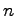
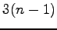
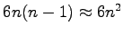
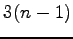
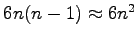
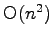

This section describes the mobility architecture used in the MF. First the general concept is described in Section 7.2. Section 7.3 describes how to create won mobility modules.
There are two mayor questions to consider for a mobility architecture in a simulation framework. The first question is where to process mobility information and and how to handle the movements of Hosts. Where and how to dynamically handle connections in an efficient way is the second decision to make.
We decided to handle mobility in a distributed manner locally in every Host module. Decisions how and where to move neither affect other Hosts nor do they require global knowledge. Connection management is handled centrally by one central controller. In order to set up and tear down connections the distances between Hosts have to be calculated for which we need the global knowledge of the position of all Hosts.
The core component of our mobility architecture is the global ChannelControl module together with an independent MobilityModule in each Host module (Fig. 5). ChannelControl handles all connection related things whereas the MobilityModules have two main tasks: The first task is to handle the movements of the Host. This can be done using various different mobility models (such as Manhattan Mobility or Brownian Motion). Second the MobilityModule communicates the location changes of the Host to the ChannelControl module. ChannelControl then updates all connection for this Host. The functionality of the MobilityModules is further described in Section 7.3.
Unfortunately, in OMNeT++ distinct links between modules require at
least two gate objects for each module, one in- and one out- gate (and
for each submodule as well). For our MF the minimal number of
gates per link is six since the Nic module is embedded
within the Host module and is itself subdivided into an
SnrEval, a Decider module and a Mac module. (see
Section 4.3). To make sure to have enough gates even in the
worst case scenario (all Hosts are directly connected), each
Host module needs at least two pairs of gates for every single
Host module in the network. Assuming  Hosts in the
network one Host would need  gates or  gate
pairs, leading to
 gates in the whole network.
gates or  gate
pairs, leading to
 gates in the whole network.
A more memory-efficient approach is to create gates dynamically which is the way we decided to go. Gates are not allocated in bulk upon initialization of the network but created dynamically upon demand. Each Host module maintains two lists one for the free in-gates and one for the free out-gates. Once ChannelControl wants to establish a link between two Hosts, it first checks the gate lists in both Hosts whether free gates are available and only if no free gate was found a new one is created. Upon link break ChannelControl tears down the connection and adds the newly freed gates to the corresponding gate list. With this approach we minimize the memory needed without increasing the computational overhead to create and destroy gates too much.
In wireless network simulations not only the fact whether two hosts are connected (i.e. can communicate with each other) is important but also the fact whether two hosts can interfere with each other. That is why the term connection gets a slightly different meaning for our MF. Upon initialization, the ChannelControl module determines the maximum interference distance based on global network parameters such as the carrier frequency of the channel, the maximal possible sending power and other propagation specific parameters. The maximal interference distance is a conservative bound on the maximal distance at which a Host can still possibly disturb the communication of a neighbor, i.e. all Hosts further away will not recognize the sending signal at all. Please note that the maximal interference distance does neither specify the maximal distance at which messages can be (correctly) received nor does it specify the range at which Hosts definitely can receive some signal (even if it is only noise). Single Hosts in the network may have sending powers that are much less the maximum power specified and thus cannot reach a Host they are (theoretically) connected to. The maximum interference distance is just a theoretical means of reducing the computational overhead of our MF.
Based on the maximal interference distance ChannelControl calculates the connections between all Hosts upon initialization of the network and updates the connections every time a Host moves. Updating connections between Hosts is a computationally expensive operation. Calculating the distance between every pair of Hosts in a network has a complexity of . While this approach may not be the most efficient way to go, it is sufficient for the current version of our MF but could also be enhanced in case we experience performance problems.
There is also the possibility to implement new mobility models. To do so, you have to derive the class for your new mobility module from BasicMobility. BasicMobility provides the getRandomPosition() function which selects a random starting position if no position is specified in the omnetpp.ini file. If you want to use another way of getting a staring position you can redefine this function.
Apart from that you have to do the following: At the times you want your host to move you have to send yourself a self-message and redefine the handleSelfMsg() function in which a new position should be determined. The position has to be of the type Coord (see API reference). As a final action in this function the updatePosition() function has to be called. It automatically updates the animated OMNeT++ GUI and furthermore writes the new position to the Blackboard. For further details take a look at the API reference of BasicMobility. As an example mobility implementation you can also have a look at the ConstSpeedMobility module in the protocols/mobility folder.